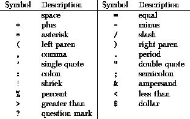

The statements of a Fortran 90 program are expressed using a carefully defined restricted character set. This character set has been chosen so that it is available on almost every machine currently in use. The Fortran 90 character set can be reproduced by virtually every display, printer or other input / output device which uses characters. It consists of the set of alphanumeric characters and a limited set of punctuation marks and other special symbols. The alphanumeric characters are the upper case letters, A-Z, the lower case letters, a-z, the digits, 0-9, and the underscore character, _. There is no difference between upper and lower case letters in Fortran 90. The allowed punctuation and other special symbols are shown in the following table.

The last two, $ and ?, do not have any special meaning in the language.
Most modern computer systems are able to process a somewhat wider
character set than this, however, this set is chosen so that it will be
available on virtually every computing system in every country in the
world. The characters found on any particular machine in excess of these
are very likely to either not exist on some other machine or have very
different graphic representation. Apart from textual output, the case of a
letter is insignificant to Fortran 90 (unlike say, C,) so the different cases
can therefore be used to improve the readability of the program.
A collating sequence is defined ([1] Section 4.3.2) and is standard ASCII;
see Section  .
.